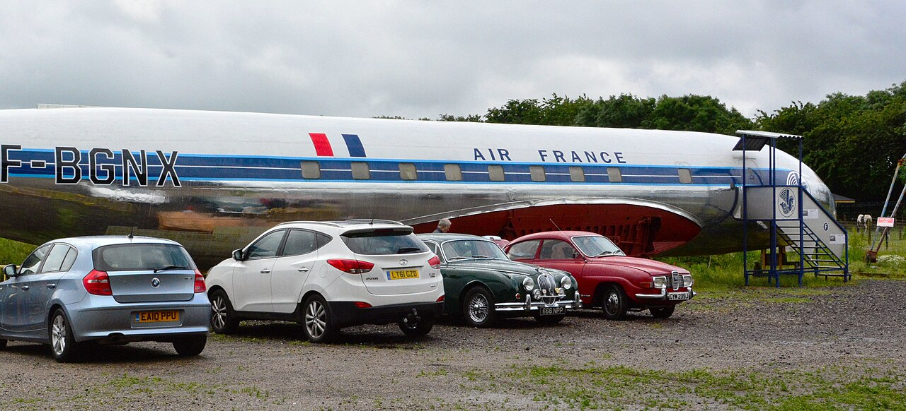

為什麼飛機的窗戶是圓的？
1953 到 1954 年間，三架當時最先進的客機先後在空中解體，其中兩架的事故原因指向同一個隱藏的弱點；而這個弱點，差點被一套「證明安全」的測試永遠藏住。
1954 年 1 月 10 日，英國海外航空 781 號班機從羅馬起飛二十分鐘、爬升接近 27,000 呎時，機組的無線電通話在半句話中中斷。這架德哈維蘭「彗星式」（de Havilland Comet）是世界上第一架噴射民航客機，卻在厄爾巴島外海空中解體，35 人全數罹難。它是不到一年內第二架解體的彗星式；三個月後還有第三架。這款曾讓旅程時間減半、被視為英國工業驕傲的飛機就此停飛，而隨後的事故調查改寫了飛機設計：今天主流客機的窗戶普遍採圓角或橢圓設計，這個慣例正是從彗星式的教訓開始的。不過，「方形窗戶害死了飛機」這個流傳七十年的說法，其實只說對了一半。

一、把機艙變成氣球的年代
1952 年 5 月 2 日，彗星式首航倫敦到約翰尼斯堡，開啟了民航的噴射時代：36 個座位、巡航時速約 780 公里、巡航高度 35,000 呎，旅程時間幾乎減半。噴射引擎在高空才有效率，所以機艙必須加壓：彗星式的艙壓差約 8.25 psi，相當於在 35,000 呎高空把艙內維持在 8,000 呎的氣壓。
每一次起降，機身就經歷一次「充氣、洩氣」循環。問題在於金屬會疲勞：反覆彎折一根迴紋針，它斷掉不是因為最後那次特別用力，而是每一次彎折都在累積損傷。當時的適航規定對壓力艙疲勞幾乎沒有概念，加壓與不加壓飛機適用同一套疲勞要求。
公平地說，德哈維蘭比規定謹慎得多：法規要求機身按 2 倍工作壓力設計、以 1.33 倍驗證，他們自行加碼到設計 2.5 倍、驗證 2 倍。問題不在偷工減料，而在沒有人知道真正的風險長什麼樣子。
二、窗角：應力塞車的地方
機身受壓時，蒙皮上的應力像水流一樣繞過開口：平滑的曲線能讓它順暢繞行，尖銳的直角卻會造成「塞車」：局部應力遠高於周圍，這就是應力集中。彗星式的方形窗戶和窗框，正是機身上最尖的彎。
事後用應變規量測，窗邊緣的峰值應力達每平方毫米 315 牛頓，是這款鋁合金極限強度（450 MPa）的 70%；德哈維蘭當年估算的數字只有 190 MPa。機身蒙皮厚度只有 0.71 毫米，窗周加厚後也只有 0.91 毫米；每一次加壓，窗角都在承受接近材料七成的極限負荷。
裂紋一旦出現，每個飛行循環都讓它長大一點，直到剩下的材料再也撐不住、瞬間撕裂。彗星式的目標壽命是 10,000 次加壓循環；原型機身在一系列測試中撐到 16,000 次才出現疲勞裂紋，帳面上綽綽有餘。這個數字後來被證明是整場悲劇裡最危險的一個。
三、三場空難與一座水槽
第一架在 1953 年 5 月 2 日墜於加爾各答附近，暴風雨中解體，43 人罹難，官方認定原因是風暴造成的結構過載，這個結論從未改變。第二架就是厄爾巴那架。機隊停飛後，德哈維蘭把想得到的原因全部修改了一遍：操縱面顫振、陣風過載、操縱系統、爆炸性減壓、引擎火災、渦輪葉片斷裂、機翼疲勞；清單裡唯獨沒有機身疲勞。1954 年 3 月 23 日，彗星式復飛。
十六天後的 4 月 8 日，第三架在那不勒斯外海以幾乎相同的方式解體，21 人罹難。4 月 12 日，彗星式的適航證被吊銷。調查由英國皇家航空研究院（RAE）主導：海軍首次動用水下攝影機搜尋海底殘骸，到 1954 年夏末撈起了約七成機體，在廠房裡逐片重建。[1]
與此同時，調查人員把另一架同型機 G-ALYU 整架放進特製水槽：用水代替空氣加壓，因為水幾乎不可壓縮，機身萬一爆裂不會像灌空氣那樣爆炸，還能修好再測。累計約 3,060 次加壓循環後，機身在前方逃生口的窗角裂開，裂紋來自一個鉚釘孔。
循著這個線索重新劃定搜索區，調查人員撈到了關鍵殘骸：機頂兩扇 ADF 無線電導航天線窗周圍的碎片，帶著調查報告所稱「疲勞的明確指紋」。厄爾巴機的第一道裂口就在這裡；這架飛機只累積了 1,290 次加壓循環，那不勒斯機更只有 900 次。
1955 年 2 月，公開調查法庭的報告送進英國國會：厄爾巴事故的原因是「壓力艙因疲勞而結構失效」。運輸大臣當庭宣布政府接受全部建議。[4]
四、被測試藏起來的弱點
剩下的謎團是：為什麼原型機撐了 16,000 次，量產機卻在 1,000 次左右就解體？答案出在測試順序。同一架原型機身先做了 2 倍壓力的強度驗證，過載使窗角的鋁材發生「冷作硬化」：局部材料性質被改變，疲勞壽命反而提升。之後補做的疲勞測試，等於測了一架比量產飛機更強、現實中卻不存在的飛機。沒經過這種「強化」的量產機，真實壽命只有帳面數字的十分之一。
1956 年修訂的英國民用航空器要求直接回應了這個教訓：壓力艙疲勞測試必須使用「未曾用於強度測試」的完整機身。
流行的方窗故事也需要修正。真正的裂口起點不是客艙窗戶，而是機頂 ADF 天線窗角落的一個鉚釘孔，而那個孔的倒角有製造瑕疵；初始裂紋可能不到 1 毫米，還藏在螺栓頭下面，例行檢查看不見。方形窗角把應力推高，微小瑕疵提供了起點，兩者的交互作用超出了 1950 年代初的知識範圍。調查報告自己就寫道：「我們對疲勞基礎物理的了解，足以讓工程師意識到還有多少東西尚待認識。」
還有一個必要的限定：不是每架方窗飛機都會失事。彗星式是在高空高壓差、薄蒙皮、方形窗角、製造瑕疵與被污染的測試同時成立時才墜毀的；加爾各答那一架，官方認定就是風暴，與疲勞無關。
五、從一座水槽到全世界的機場
彗星式付出的代價成了全行業的教材。波音 707 等後繼機種改用「破損安全」設計：不假裝裂紋不會出現，而是讓結構在裂紋出現時仍有備援路徑、能被檢查發現。這套思路與彗星式的「安全壽命」思路後來整合成今天的「損傷容限」標準，水槽疲勞測試也成為壓力艙認證的標準程序。1958 年 10 月 4 日，重新設計的 Comet 4 執行了史上第一個跨大西洋噴射定期航班；彗星式的血脈後來以 Nimrod 巡邏機的形式延續了約六十年。
功課也從未真正結束：1988 年阿羅哈航空 243 號班機，一段 18 呎長的機身上蓋在飛行中因未被發現的疲勞與膠合失效而脫落。每一次這樣的事故，都在重複同一個提醒：循環載荷下的結構，不能用「看起來夠強」來判斷。
科學最後追上了事故。1963 年 Paris 與 Erdogan 提出裂紋成長公式後，學者用彗星式留下的數據回算：預測厄爾巴機的疲勞壽命是 1,272 次循環，實際數字是 1,290 次。半世紀後的理論與當年的調查彼此驗證。
這個故事可以帶走的核心不是「窗戶要圓」，而是一個更普遍的陷阱：測試本身改變了被測的東西。用強化過的樣品證明量產飛機安全、用美化過的數據證明現場沒問題，結構都一樣。當然，類比有邊界：金屬疲勞有明確的物理定律可算，而管理與制度的「疲勞」沒有公式；但「你的驗證環境和真實環境是不是同一個東西」，是每個領域都該問的問題。
查證資料來源4 項
實際支持文中事實主張的來源，逐條標註支持的內容；文內如有 [數字] 標記，對應此處編號。
- De Havilland DH-106 Comet 1（FAA Lessons Learned 事故資料庫） ↗
- Report of the Court of Inquiry into the Accidents to Comet G-ALYP and Comet G-ALYY（英國運輸與民航部，1955） ↗
- The Real Story of the Comet Disaster（Paul Withey，伯明罕大學；RAeS 漢堡講座，2019） ↗
- Comet Aircraft Accidents (Report of Inquiry)（英國國會 Hansard，1955 年 2 月 16 日） ↗
延伸探討
把故事帶回自己的思考
下次登機坐在窗邊，可以看看窗框的圓角，然後問三件事：這架飛機累積了多少次加壓循環？它的疲勞壽命當年是怎麼被「證明」的？測試樣品和量產品是同一批嗎？以及，我們今天對哪些新材料、新結構，正處於 1950 年代工程師那種「知道自己還有多少不知道」的位置？